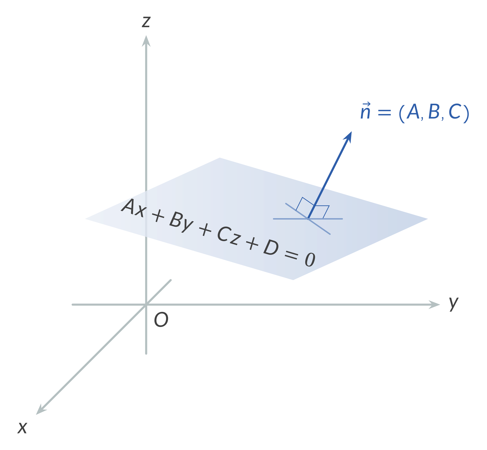
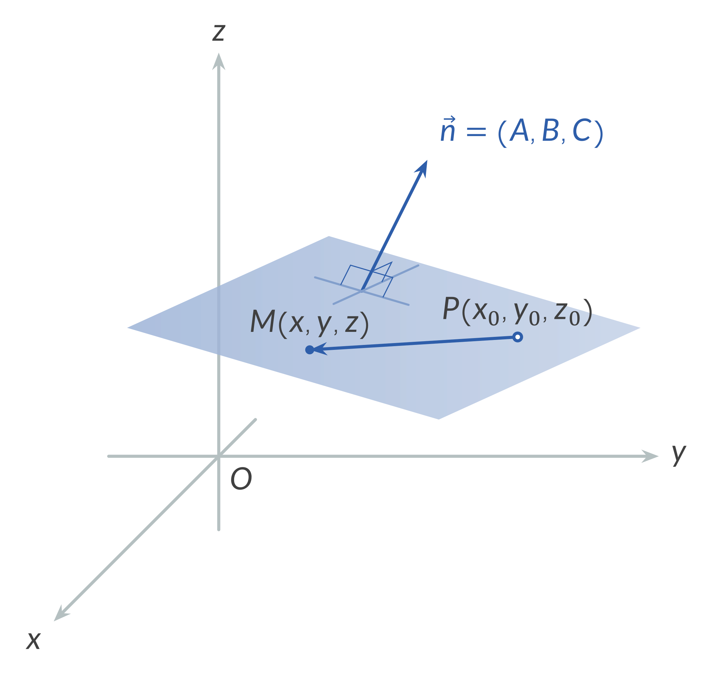
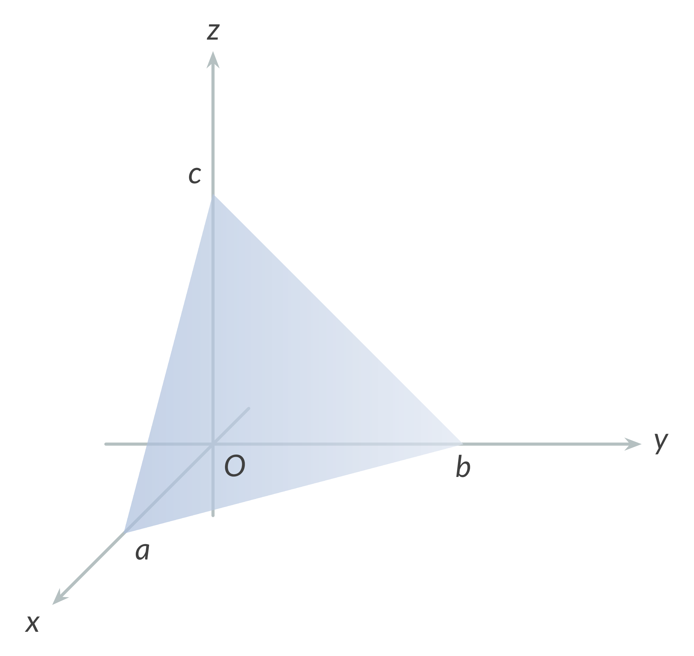
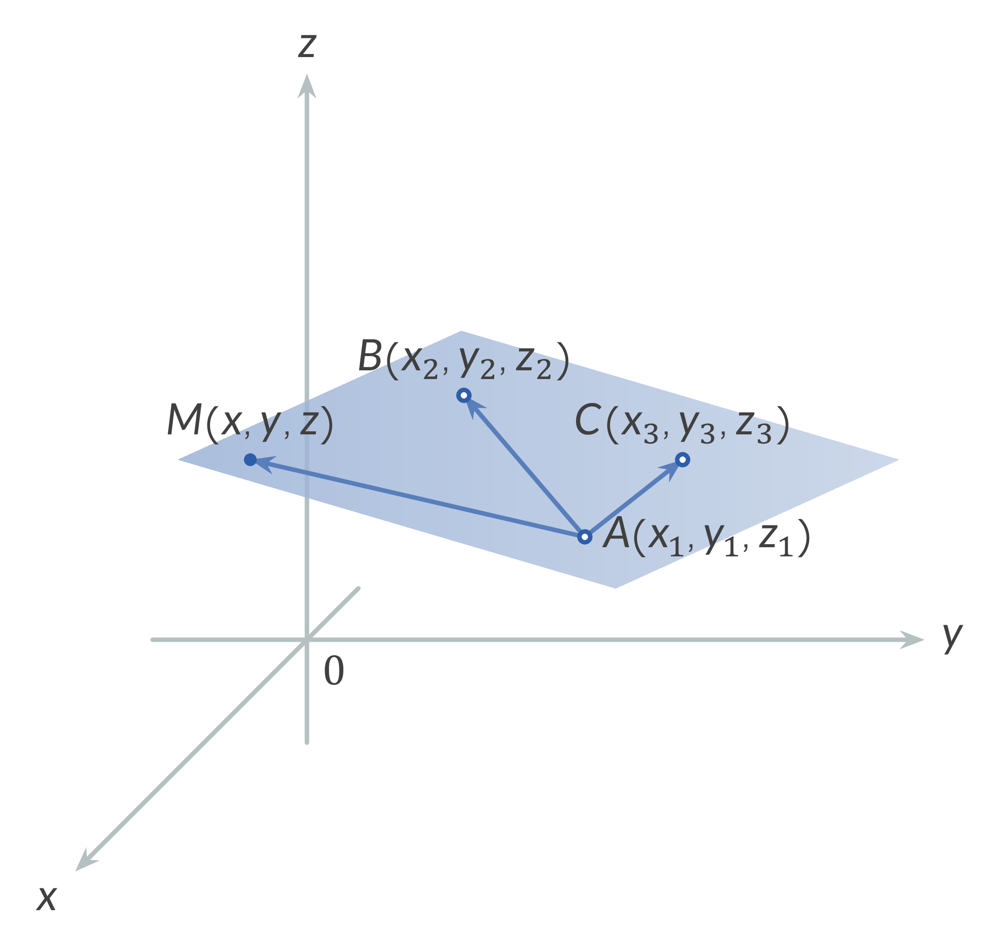
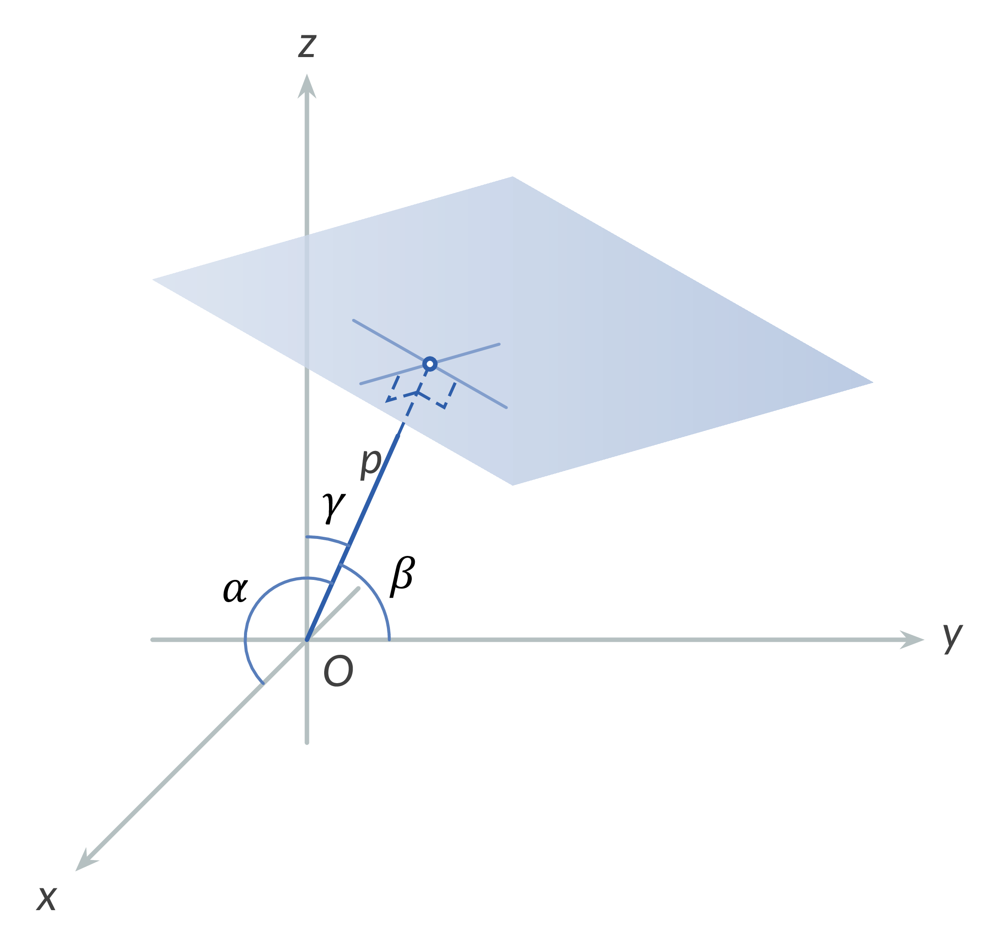
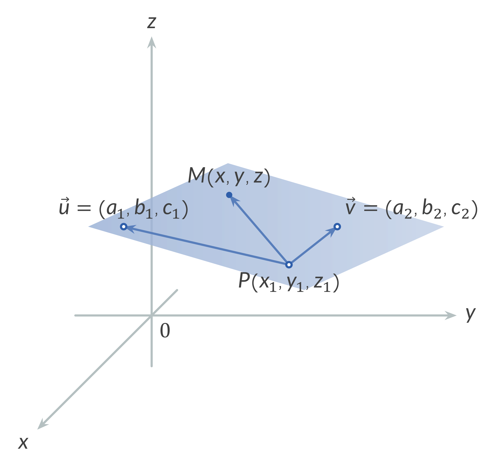
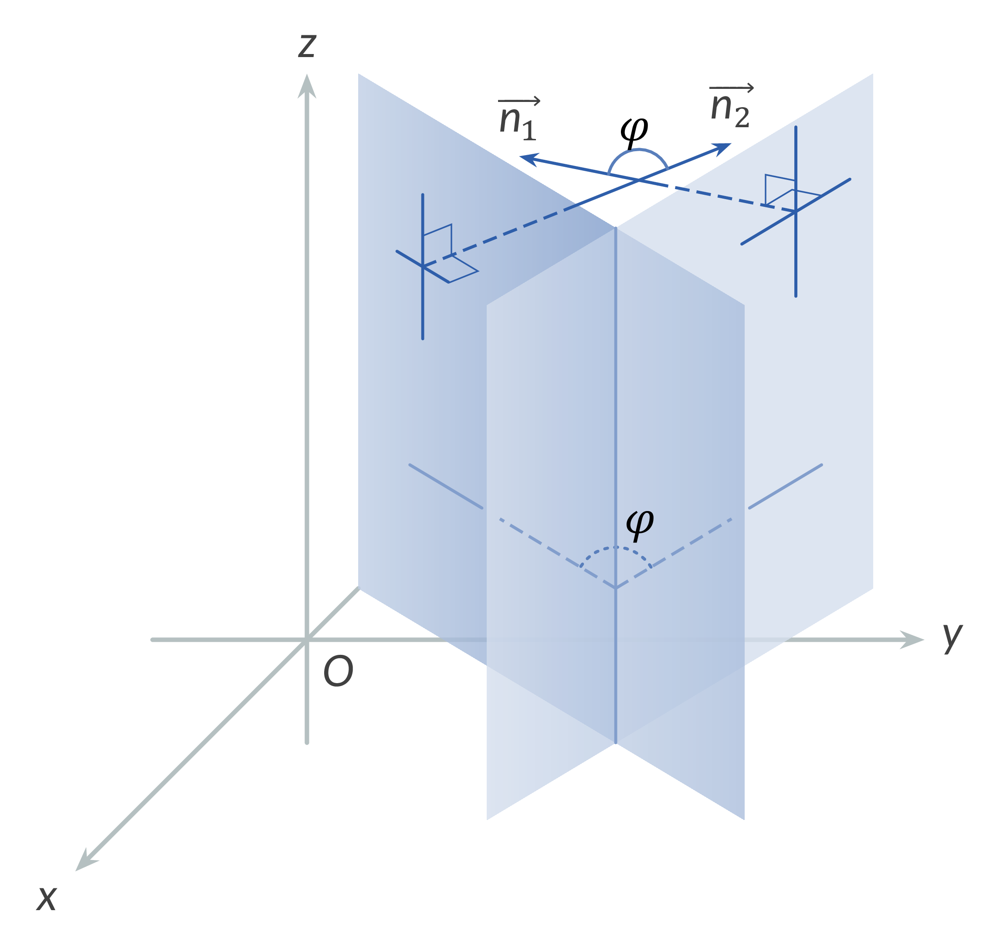
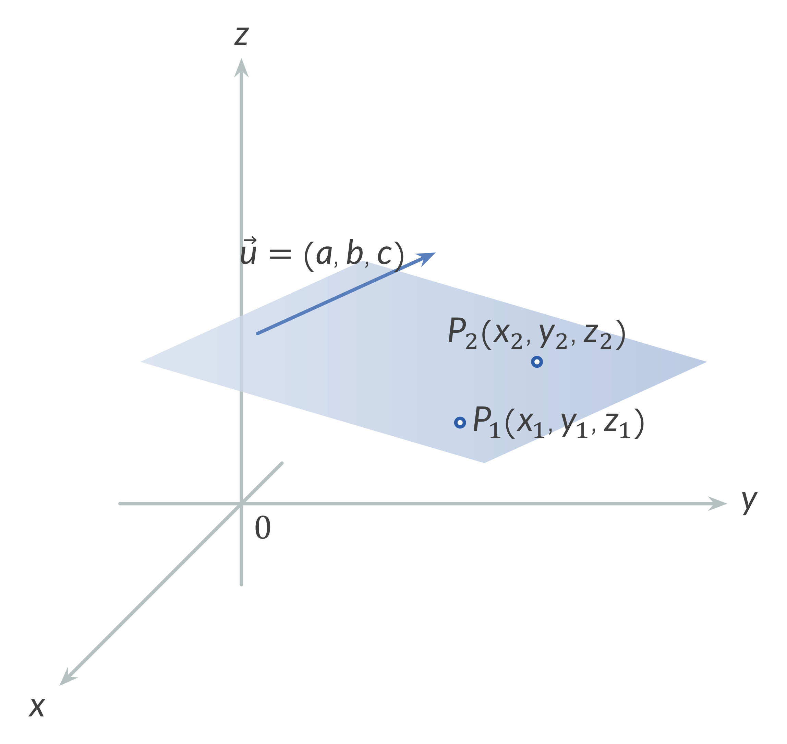
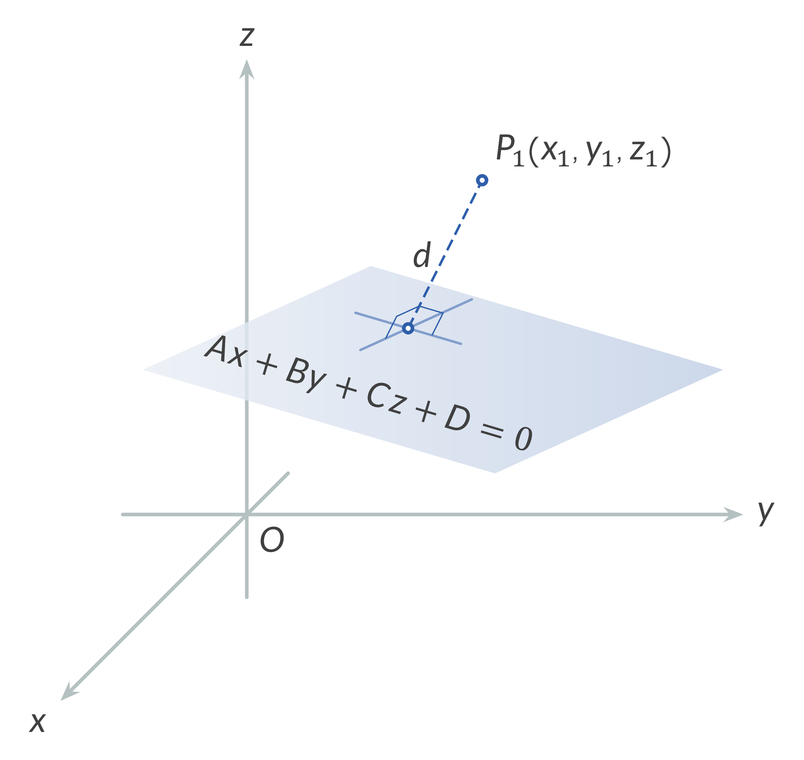

Point coordinates: $x, y, z, x_{0}, y_{0}, z_{0}, x_{1}, ...$
Real numbers: $A, B, C, D, A_{1}, A_{2}, a, b, c, a_{1}, a_{2}, \lambda, p, t, ...$
Normal vectors: $\vec{n}, \vec{n}_{1}, \vec{n}_{2}$
Direction cosines: $\cos \alpha, \cos \beta, \cos \gamma$
Distance from point to plane: $d$
1. General Equation of a Plane: $$Ax + By + Cz + D = 0$$
2. Normal Vector to a Plane
The vector $\vec{n}(A,B,C)$ is normal to the plane $Ax+By+Cz+D=0$.

3. Particular Cases of the Equation of a Plane $Ax+By+Cz+D=0$
If $A=0$, the plane is parallel to the x-axis.
If $B=0$, the plane is parallel to the y-axis.
If $C=0$, the plane is parallel to the z-axis.
If $D=0$, the plane lies on the origin.
If $A=B=0$, the plane is parallel to the xy-plane.
If $B=C=0$, the plane is parallel to the yz-plane.
If $A=C=0$, the plane is parallel to the xz-plane.
4. Point Direction Form
$A(x-x_{0})+B(y-y_{0})+C(z-z_{0})=0$,
where the point $P(x_{0},y_{0},z_{0})$ lies in the plane, and the vector $(A, B, C)$ is normal to the plane.

5. Intercept Form
$\dfrac{x}{a}+\dfrac{y}{b}+\dfrac{z}{c}=1$

6. Three Point Form
$\begin{vmatrix} x-x_{3} & y-y_{3} & z-z_{3} \\ x_{1}-x_{3} & y_{1}-y_{3} & z_{1}-z_{3} \\ x_{2}-x_{3} & y_{2}-y_{3} & z_{2}-z_{3} \end{vmatrix}=0,$
or
$\begin{vmatrix} x & y & z & 1 \\ x_{1} & y_{1} & z_{1} & 1 \\ x_{2} & y_{2} & z_{2} & 1 \\ x_{3} & y_{3} & z_{3} & 1 \end{vmatrix}=0.$

7. Normal Form
$x \cos \alpha + y \cos \beta + z \cos \gamma - p = 0$,
where $p$ is the perpendicular distance from the origin to the plane, and $\cos \alpha, \cos \beta, \cos \gamma$ are the direction cosines of any line normal to the plane.

8. Parametric Form
$\begin{cases} x=x_{1}+a_{1}s+a_{2}t \\ y=y_{1}+b_{1}s+b_{2}t \\ z=z_{1}+c_{1}s+c_{2}t \end{cases}$
where $(x,y,z)$ are the coordinates of any unknown point on the line, the point $P(x_{1},y_{1},z_{1})$ lies in the plane, and the vectors $(a_{1},b_{1},c_{1})$ and $(a_{2},b_{2},c_{2})$ are parallel to the plane.

9. Dihedral Angle Between Two Planes
If the planes are given by
$A_{1}x+B_{1}y+C_{1}z+D_{1}=0$,
$A_{2}x+B_{2}y+C_{2}z+D_{2}=0$,
then the dihedral angle between them is
$$\cos \varphi=\dfrac{\vec{n}_{1}\cdot\vec{n}_{2}}{|\vec{n}_{1}|\cdot|\vec{n}_{2}|}=\dfrac{A_{1}A_{2}+B_{1}B_{2}+C_{1}C_{2}}{\sqrt{A_{1}^{2}+B_{1}^{2}+C_{1}^{2}}\cdot\sqrt{A_{2}^{2}+B_{2}^{2}+C_{2}^{2}}}.$$

10. Parallel Planes
Two planes $A_{1}x+B_{1}y+C_{1}z+D_{1}=0$ and $A_{2}x+B_{2}y+C_{2}z+D_{2}=0$ are parallel if
$$\dfrac{A_{1}}{A_{2}}=\dfrac{B_{1}}{B_{2}}=\dfrac{C_{1}}{C_{2}}.$$
11. Perpendicular Planes
Two planes $A_{1}x+B_{1}y+C_{1}z+D_{1}=0$ and $A_{2}x+B_{2}y+C_{2}z+D_{2}=0$ are perpendicular if
$A_{1}A_{2}+B_{1}B_{2}+C_{1}C_{2}=0$.
12. Equation of a Plane Through $P(x_{1},y_{1},z_{1})$ and Parallel To the Vectors $(a_{1},b_{1},c_{1})$ and $(a_{2},b_{2},c_{2})$
$\begin{vmatrix} x-x_{1} & y-y_{1} & z-z_{1} \\ a_{1} & b_{1} & c_{1} \\ a_{2} & b_{2} & c_{2} \end{vmatrix}=0$
13. Equation of a Plane Through $P_{1}(x_{1},y_{1},z_{1})$ and $P_{2}(x_{2},y_{2},z_{2})$, and Parallel To the Vector $(a, b, c)$
$\begin{vmatrix} x-x_{1} & y-y_{1} & z-z_{1} \\ x_{2}-x_{1} & y_{2}-y_{1} & z_{2}-z_{1} \\ a & b & c \end{vmatrix}=0$

14. Distance From a Point To a Plane
The distance from the point $P_{1}(x_{1},y_{1},z_{1})$ to the plane $Ax+By+Cz+D=0$ is
$d=\dfrac{\left| Ax_{1}+By_{1}+Cz_{1}+D\right|}{\sqrt{A^{2}+B^{2}+C^{2}}}$

15. Intersection of Two Planes
If two planes $A_{1}x+B_{1}y+C_{1}z+D_{1}=0$ and $A_{2}x+B_{2}y+C_{2}z+D_{2}=0$ intersect, the intersection straight line is given by
$\begin{cases} x=x_{1}+at \\ y=y_{1}+bt \\ z=z_{1}+ct \end{cases}$
or
$\dfrac{x-x_{1}}{a}=\dfrac{y-y_{1}}{b}=\dfrac{z-z_{1}}{c};$
where
$a = \begin{vmatrix} B_{1} & C_{1} \\ B_{2} & C_{2} \end{vmatrix}, b = \begin{vmatrix} C_{1} & A_{1} \\ C_{2} & A_{2} \end{vmatrix}, c = \begin{vmatrix} A_{1} & B_{1} \\ A_{2} & B_{2} \end{vmatrix}$,
$x_{1} = \dfrac{b \begin{vmatrix} D_{1} & C_{1} \\ D_{2} & C_{2} \end{vmatrix} - c \begin{vmatrix} D_{1} & B_{1} \\ D_{2} & B_{2} \end{vmatrix}}{a^{2} + b^{2} + c^{2}}$,
$y_{1} = \dfrac{c \begin{vmatrix} D_{1} & A_{1} \\ D_{2} & A_{2} \end{vmatrix} - a \begin{vmatrix} D_{1} & C_{1} \\ D_{2} & C_{2} \end{vmatrix}}{a^{2} + b^{2} + c^{2}}$,
$z_{1} = \dfrac{a \begin{vmatrix} D_{1} & B_{1} \\ D_{2} & B_{2} \end{vmatrix} - b \begin{vmatrix} D_{1} & A_{1} \\ D_{2} & A_{2} \end{vmatrix}}{a^{2} + b^{2} + c^{2}}$